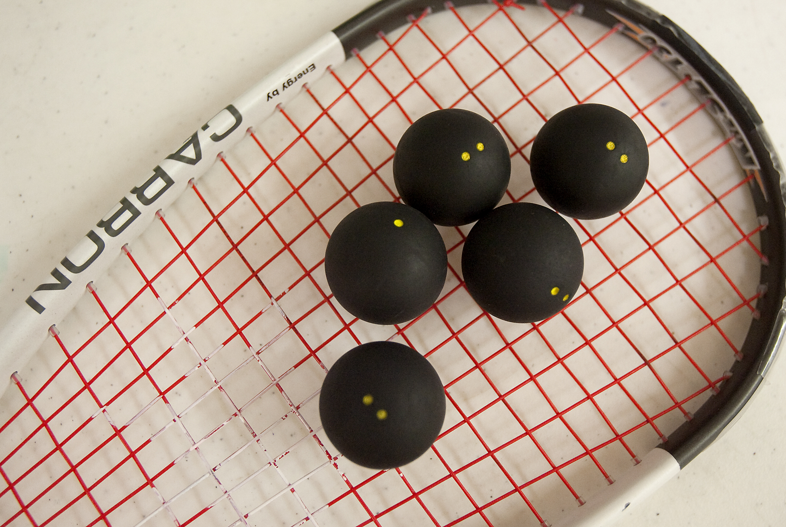
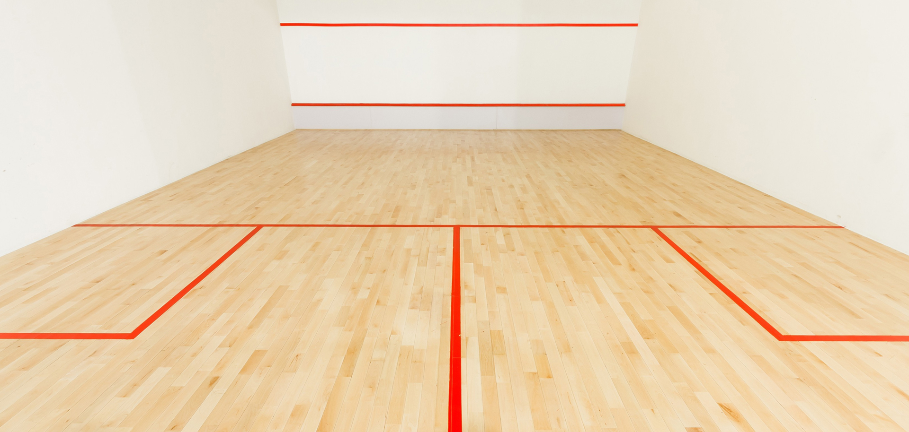
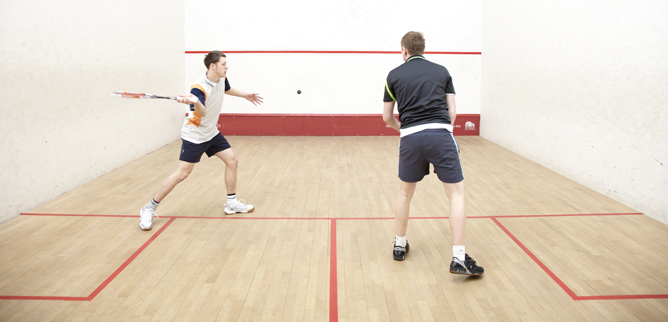
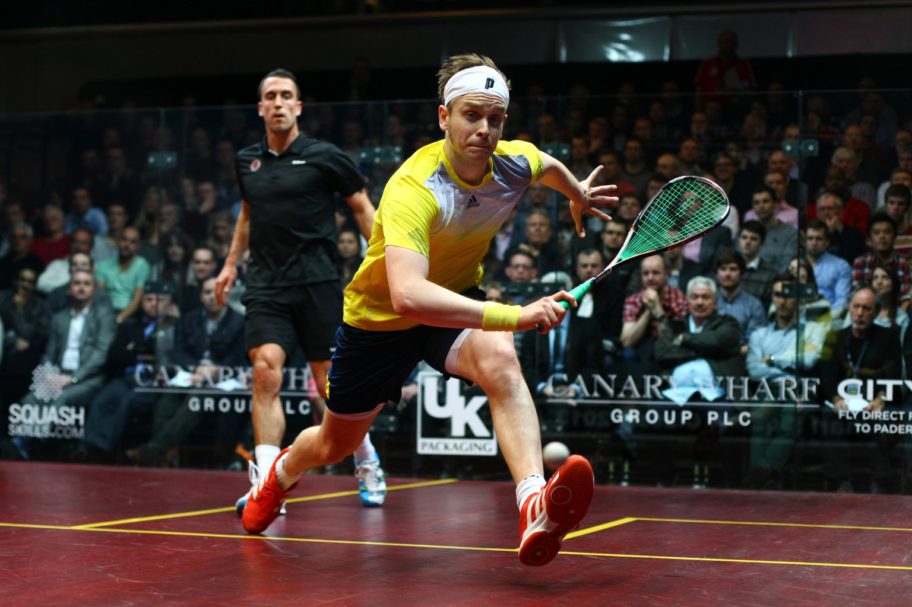

Hello, I would like to tell you about my favorite sport called squash . Ever since I was a little girl, I loved playing sports. One of the first sports I played was tennis. I loved it, but there was something missing. I kept playing until about fourth grade, then I stopped. Without tennis, I was unhappy, but with it, I still wasn't happy enough, until I discovered squash.
Squash was my savior. Ever since I clicked that "Thirds Squash" button on the winter athletic sign ups, I knew that my life would never be the same. I told all of my friends about my new discovery, and how excited I was to play squash. As soon as I could, I got onto an available squash court with my friend Clem, who taught me how to play the magnificent sport of squash.
Clem and I were super excited to get the season started early. Both of us hustled after school to change into our squash clothes and then went over to the courts so we would be able to play. I picked up the racquet and the ball, and knew that I was doing what I was meant to do. The first time I hit the ball, I felt a rush of adrenaline, and was thrilled that I finally found what I was missing in tennis.
Clem and I played as often as we could, until tryouts came up. We were trying out for the team of thirds squash. I was excited and scared at the same time, not sure if I was going to make it. But, it turns out, my dream came true, because everyone made the thirds team. I was having the best time, playing almost everyday after school, until one day the Athletics Director entered the courts. We were gathered into a circle on that fateful day, to hear that they were making cuts from thirds squash. We were all very nervous, and not happy that we could not all be on the same team.
Later that week, and email came out that decided my fate. My dreams were crushed when I was not on the email list for the "core group" of thirds squash. It was then that I knew I reached rock bottom.
   